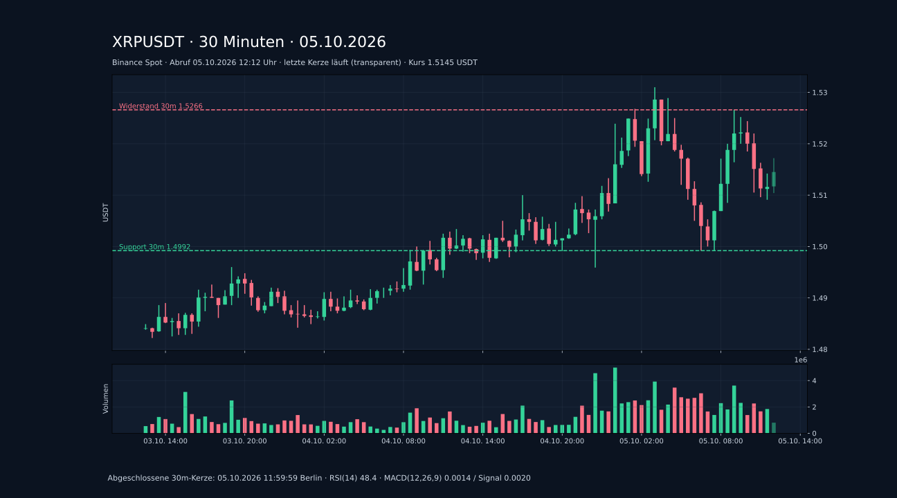
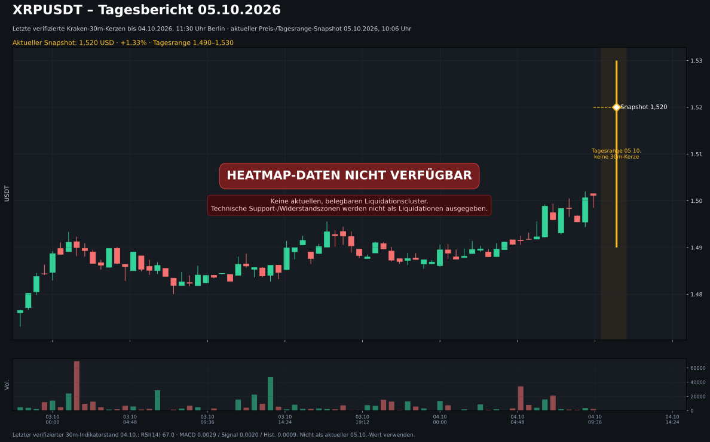
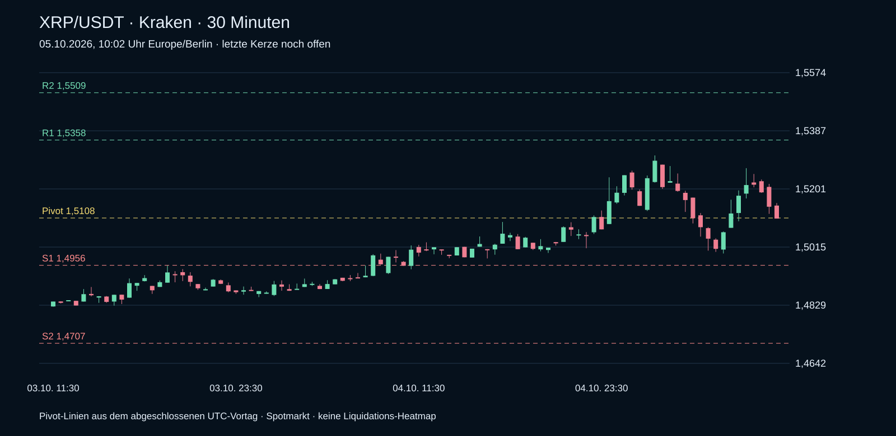

Tagesbericht 05.10.2026 · echte Kerzendaten
Binance Spot BTCUSDT / XRPUSDT. Abruf 05.10.2026, 12:12 Uhr Europe/Berlin. Hauptansicht 30 Minuten. Alle fünf Zeitebenen verfügbar; Indikatoren ausschließlich aus abgeschlossenen Kerzen.
Heatmap-Daten nicht verfügbar: CoinAnk verlangt eine Anmeldung; der Zugang zum Chart ist noch nicht bestätigt. Technische Marken sind keine Liquidationscluster.
XRPUSDT · 1.5145 USDT
30m: Tieferes Hoch / tieferes Tief. Support 1.4992 · Widerstand 1.5266 USDT. RSI(14) 48.4; MACD 0.0014, Signal 0.0020, Histogramm -0.0006. Letzte abgeschlossene 30m-Kerze: 05.10.2026 11:59:59 Berlin.
Excel-Tagesbericht XRP · Einzelansicht
| Zeitebene | Struktur | RSI | MACD | Support | Widerstand |
|---|---|---|---|---|---|
| 15m | Höheres Hoch / höheres Tief | 44.9 | -0.0001 | 1.5091 | 1.5266 |
| 30m | Tieferes Hoch / tieferes Tief | 48.4 | 0.0014 | 1.4992 | 1.5266 |
| 1h | Höheres Hoch / höheres Tief | 52.9 | 0.0045 | 1.4992 | 1.5310 |
| 4h | Seitwärts / gemischte Struktur | 58.6 | 0.0033 | 1.4805 | 1.5310 |
| 1d | Höheres Hoch / höheres Tief | 59.0 | 0.0370 | 1.4458 | 1.6581 |
Bedingte Szenarien
Long: 30m-Schluss über Widerstand und erfolgreicher Rücktest bei 1.5266; Invalidierung / Stop 1.5186; Ziele 1.5346 / 1.5427 USDT.
Short: 30m-Schluss unter Support und gescheiterter Rücklauf bei 1.4992; Invalidierung / Stop 1.5072; Ziele 1.4912 / 1.4831 USDT.
Struktur: letzte 12 gegen vorherige 12 geschlossene Kerzen. Support/Widerstand: Extrempunkte der letzten 12. Stop-/Zielabstand: 1 / 2 × mittlere True Range der letzten 14 geschlossenen 30m-Kerzen. Keine pauschale Handelsaufforderung.
XRP · Echter 30m-Kurschart
SVG in Vollbild / herunterladen

XRP · Heatmap-Status mit aktuellem Kurschart
SVG in Vollbild / herunterladen

Quellen und Daten
Tagesstand 05.10.2026 · 05.10.2026, 10:02 Uhr
Aktuelle Kraken-Spotkurse und echte 30-Minuten-Kerzen. Technische Marken aus dem abgeschlossenen Vortag. Die ältere Heatmap steht separat unten.
XRP · 30-Minuten-Chart (10-Uhr-Snapshot)
Kraken Spot · echte Kerzen · Pivot-Marken aus dem UTC-Vortag

XRP/USDT · 1,5106
-0,66 % zum Vortagsschluss
Tagesbereich (UTC): 1,4994–1,5308
Über SMA20 (1,4660); unter Tagespivot 1,5108
Support: S1 1,4956 / S2 1,4707
Widerstand: R1 1,5358 / R2 1,5509
Chart ohne Heatmap
Datenstand 03.10.2026

Chart mit Liquidation Heatmap
Datenstand 03.10.2026